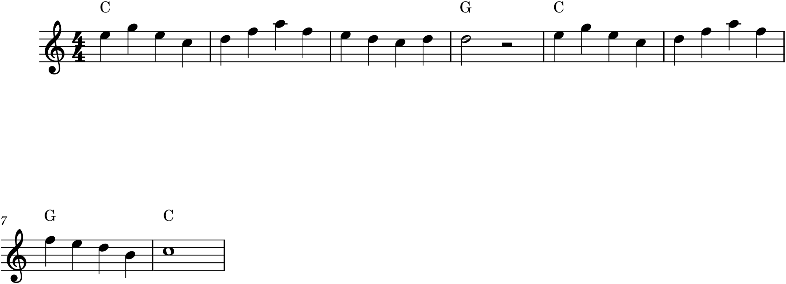
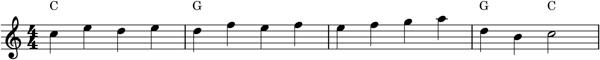

A melody is not an undifferentiated stream of notes; it is organized, the way language is, into units of sense. Words group into clauses, clauses into sentences, sentences into paragraphs — and music does exactly the same, at every level. The smallest complete unit is the phrase, and phrases combine into larger, balanced structures with names of their own: the period and the sentence. Understanding these is what lets you build a melody that has not just a good shape (Chapter 17) but a coherent architecture — a beginning, a middle, and an end that feel inevitable. This is where melody becomes form.
18.1The phrase
A phrase is the basic unit of musical thought — a stretch of melody that expresses one complete idea and ends with a cadence (Chapter 15). It is the musical equivalent of a clause or a line of poetry: long enough to say something, short enough to be taken in at once, and closed off by a moment of punctuation. In the music this book is concerned with, phrases are very often four bars long — a length that corresponds neatly to a single comfortable breath, which is no accident, since so much music descends from song.
What makes it a phrase is the cadence at the end. Without that closing punctuation the melody would run on, an unterminated thought; the cadence is what tells the ear “a unit has completed.” And because cadences come in degrees of finality — the hanging half cadence, the conclusive authentic cadence — the kind of cadence that ends a phrase tells you how final it is, and therefore how it relates to the phrases around it.
18.2The period: question and answer
Phrases rarely stand alone; they pair up, and the commonest pairing is the period — two phrases that work as a question and its answer. The first phrase, the antecedent, ends with a weak cadence, usually a half cadence (on the dominant): it poses a question, coming to rest but plainly unfinished. The second phrase, the consequent, answers it, ending with a strong authentic cadence on the tonic: it resolves what the antecedent left open.

The period in Figure 18.1 is a parallel period: the two phrases open with identical material, so the ear recognizes the consequent as a re-hearing of the antecedent that this time comes out right. (When the second phrase begins with new material instead, it is a contrasting period — less common, but the logic of weak-then-strong cadence is the same.) This question-and-answer shape is one of the most satisfying in all of music precisely because it mirrors conversation: a statement that trails off, and a reply that lands.
18.3The sentence
The sentence is the other great way to build an eight-bar unit, and it is constructed on a different principle — not balance between two phrases, but the development of a single idea. It has three functions, in order:
- Presentation — a short basic idea (a motive, in the sense of Chapter 17) is stated, then immediately repeated, often a step higher or over a different harmony. This establishes the material by saying it twice.
- Continuation — the idea is broken into smaller fragments and driven forward, the harmony usually changing faster, the motion accelerating. This is where energy builds.
- Cadence — the whole thing lands on a cadence, closing the unit.

The sentence in Figure 18.2 shows the essential arc: statement, repetition, development, cadence. It is a more dynamic, goal-driven shape than the period — where the period is a conversation, the sentence is an argument that builds to its conclusion. Beethoven was especially fond of it, and once you know the shape you will hear it everywhere.
18.4Two ways to build eight bars
Period and sentence are the two default templates for an eight-bar melody, and it is worth holding them side by side, because the contrast is illuminating:
- A period is two phrases in a weak-cadence / strong-cadence pair — balanced, symmetrical, question-and-answer.
- A sentence is one idea stated, repeated, developed, and cadenced — dynamic, cumulative, statement-and-growth.
Neither is better; they simply feel different, and a composer chooses between them for that difference. Much of the short music you know is one or the other, or a small variation on them, and simply being able to tell which transforms how you hear a tune.
18.5Phrases need not be square
Four-bar phrases and eight-bar periods are the norm this book builds on, but they are a starting point, not a law. Phrases can be extended (a cadence delayed, stretching a four-bar phrase to five or six), expanded by repeating an internal bit, or joined by elision, where the last note of one phrase is also the first of the next, so they overlap. These flexibilities are how real music avoids sounding like a row of identical boxes. For now, master the square four- and eight-bar models; once they are natural, bending them is easy, and bending them is much of what gives a piece personality.
18.6From phrases to form
Phrases combine into periods and sentences; periods and sentences combine into sections; and sections combine into whole pieces. That next level up — how eight- and sixteen-bar units assemble into the binary, ternary, and rondo shapes of complete pieces — is the subject of Part 4. But the principle is already visible here: music is built in a hierarchy, small balanced units nesting into larger ones, cadences marking the joints at every level. Learn to hear the phrase and the period, and you have learned to hear the seams of a piece — which is the first step to composing pieces of your own that hold together.
In MuseScore
Phrase structure is something you build by arranging material, and MuseScore’s copy-and-edit tools make that fast.
- Build a parallel period by composing a four-bar antecedent that ends on a half cadence (a phrase closing on the V chord — add a Roman numeral or chord symbol to confirm it). Then select all four bars, copy (Ctrl+C), and paste them to start the consequent. Now edit only the last bar or two of the copy so it drives to an authentic cadence on the tonic. Two phrases, same start, different endings — the period of Figure 18.1.
- Build a sentence by composing a one- or two-bar basic idea, copying it to make the repetition, then writing a continuation that uses just a fragment of the idea (delete notes, keep the rhythm) before a closing cadence.
- Mark the cadences with chord symbols (Ctrl+K) or Roman numerals so you can see the phrase structure at a glance — half cadence at the antecedent’s end, authentic cadence at the consequent’s.
- Add a breath mark or phrase-ending slur (Chapter 10) to make each phrase visually explicit, exactly as a singer would need.
Try it: enter the four-bar antecedent of Figure 18.1, ending on the half cadence, and play it — notice how it wants to continue. Then copy it, alter the ending to land on the tonic, and play the whole eight bars. The moment the consequent resolves is the sound of a musical question being answered, and you built it by copying one phrase and changing its last two bars.